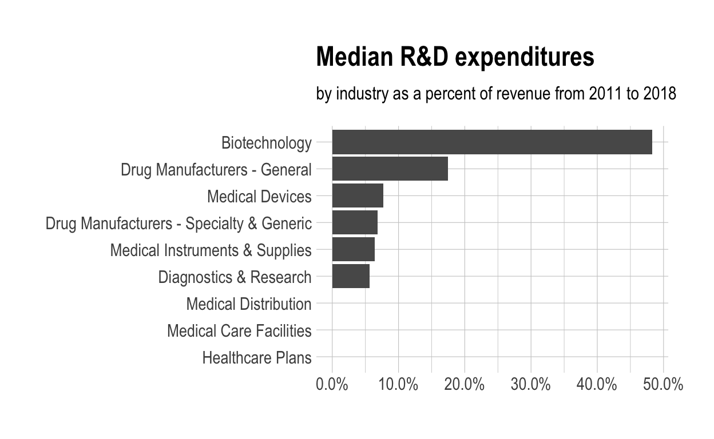

Code for Quiz 6, more dplyr and our first interactive chart using echarts4r.
drug_cos.csv, health_cos.csv in to R and assign to the variables drug_cos and health_cos, respectivelydrug_cos <- read_csv("https://estanny.com/static/week6/drug_cos.csv")
health_cos <- read_csv("https://estanny.com/static/week6/health_cos.csv")
glimpse to get a glimpse of the datadrug_cos %>% glimpse()
Rows: 104
Columns: 9
$ ticker <chr> "ZTS", "ZTS", "ZTS", "ZTS", "ZTS", "ZTS", "ZTS"
$ name <chr> "Zoetis Inc", "Zoetis Inc", "Zoetis Inc", "Zoet
$ location <chr> "New Jersey; U.S.A", "New Jersey; U.S.A", "New
$ ebitdamargin <dbl> 0.149, 0.217, 0.222, 0.238, 0.182, 0.335, 0.366
$ grossmargin <dbl> 0.610, 0.640, 0.634, 0.641, 0.635, 0.659, 0.666
$ netmargin <dbl> 0.058, 0.101, 0.111, 0.122, 0.071, 0.168, 0.163
$ ros <dbl> 0.101, 0.171, 0.176, 0.195, 0.140, 0.286, 0.321
$ roe <dbl> 0.069, 0.113, 0.612, 0.465, 0.285, 0.587, 0.488
$ year <dbl> 2011, 2012, 2013, 2014, 2015, 2016, 2017, 2018,health_cos %>% glimpse()
Rows: 464
Columns: 11
$ ticker <chr> "ZTS", "ZTS", "ZTS", "ZTS", "ZTS", "ZTS", "ZTS",
$ name <chr> "Zoetis Inc", "Zoetis Inc", "Zoetis Inc", "Zoeti
$ revenue <dbl> 4233000000, 4336000000, 4561000000, 4785000000,
$ gp <dbl> 2581000000, 2773000000, 2892000000, 3068000000,
$ rnd <dbl> 427000000, 409000000, 399000000, 396000000, 3640
$ netincome <dbl> 245000000, 436000000, 504000000, 583000000, 3390
$ assets <dbl> 5711000000, 6262000000, 6558000000, 6588000000,
$ liabilities <dbl> 1975000000, 2221000000, 5596000000, 5251000000,
$ marketcap <dbl> NA, NA, 16345223371, 21572007994, 23860348635, 2
$ year <dbl> 2011, 2012, 2013, 2014, 2015, 2016, 2017, 2018,
$ industry <chr> "Drug Manufacturers - Specialty & Generic", "Drunames_drug <- drug_cos %>% names()
names_health <- health_cos %>% names()
intersect(names_drug, names_health)
[1] "ticker" "name" "year" For drug_cos select (in this order): ticker, year, grossmargin
Extract observations for 2018
Assign output to drug_subset
For health_cos select (in this order): ticker, year, revenue, gp, industry
Extract observations for 2018
Assign output to health_subset
drug_subset join with columns in health_subsetdrug_subset %>% left_join(health_subset)
# A tibble: 13 x 6
ticker year grossmargin revenue gp industry
<chr> <dbl> <dbl> <dbl> <dbl> <chr>
1 ZTS 2018 0.672 5.82e 9 3.91e 9 Drug Manufacturers -
2 PRGO 2018 0.387 4.73e 9 1.83e 9 Drug Manufacturers -
3 PFE 2018 0.79 5.36e10 4.24e10 Drug Manufacturers -
4 MYL 2018 0.35 1.14e10 4.00e 9 Drug Manufacturers -
5 MRK 2018 0.681 4.23e10 2.88e10 Drug Manufacturers -
6 LLY 2018 0.738 2.46e10 1.81e10 Drug Manufacturers -
7 JNJ 2018 0.668 8.16e10 5.45e10 Drug Manufacturers -
8 GILD 2018 0.781 2.21e10 1.73e10 Drug Manufacturers -
9 BMY 2018 0.71 2.26e10 1.60e10 Drug Manufacturers -
10 BIIB 2018 0.865 1.35e10 1.16e10 Drug Manufacturers -
11 AMGN 2018 0.827 2.37e10 1.96e10 Drug Manufacturers -
12 AGN 2018 0.861 1.58e10 1.36e10 Drug Manufacturers -
13 ABBV 2018 0.764 3.28e10 2.50e10 Drug Manufacturers - Start with drug_cos
Extract observations for the ticker SEE QUIZ from drug_cos
Assign output to the variable drug_cos_subset
drug_cos_subset <- drug_cos %>%
???(??? == "???")drug_cos_subsetdrug_cos_subset
Use left_join to combine the rows and columns of drug_cos_subset with the columns of health_cos
Assign the output to combo_df
??? <- drug_cos_subset %>%
left_join(health_cos)combo_dfcombo_df
ticker, name, location and industry are the same for all the observationsco_name??? <- combo_df %>%
distinct(name) %>%
pull()co_locationco_location <- ??? %>%
???(???) %>%
pull() co_industry groupco_industry <- ??? %>%
???(???) %>%
???() Put the r inline commands used in the blanks below. When you knit the document the results of the commands will be displayed in your text.
The company ??? is located in ??? and is a member of the ??? industry group.
Start with combo_df
Select variables (in this order): year, grossmargin, netmargin, revenue, gp, netincome
Assign the output to combo_df_subset
combo_df_subset <- combo_df %>%
select(???, ???, ???,
???, ???, ???)combo_df_subset???grossmargin_check to compare with the variable grossmargin. They should be equal.
grossmargin_check = gp / revenueclose_enough to check that the absolute value of the difference between grossmargin_check and grossmargin is less than 0.001combo_df_subset %>%
mutate(grossmargin_check = ??? / ???,
close_enough = abs(grossmargin_check - grossmargin) < 0.001)Create the variable netmargin_check to compare with the variable netmargin. They should be equal.
Create the variable close_enough to check that the absolute value of the difference between netmargin_check and netmargin is less than 0.001
??? %>%
???(netmargin_check = ??? / ???,
close_enough = ???(netmargin_check - netmargin) < 0.001)Fill in the blanks
Put the command you use in the Rchunks in the Rmd file for this quiz
Use the health_cos data
For each industry calculate
health_cos %>%
group_by(???) %>%
summarize(??? = ???(??? / revenue) * 100,
??? = ???(??? / revenue) * 100,
??? = ???(??? / revenue) * 100,
??? = ???(??? / revenue) * 100
) Fill in the blanks
Use the health_cos data
Extract observations for the ticker SEE QUIZ from health_cos and assign to the variable health_cos_subset
health_cos_subset <- health_cos %>%
???(ticker == "???")
health_cos_subsethealth_cos_subset
?distinct. Go to the help pane to see what distinct does?pull. Go to the help pane to see what pull doesRun the code below
health_cos_subset %>%
distinct(name) %>%
pull(name)
co_name??? <- health_cos_subset %>%
distinct(name) %>%
pull(name)You can take output from your code and include it in your text.
In following chuck
co_industryco_industry <- ??? %>%
???(industry) %>%
???()This is outside the R chunk. Put the r inline commands used in the blanks below. When you knit the document the results of the commands will be displayed in your text.
The company ??? is a member of the ??? group.
dfglimpse to glimpse the data for the plotsdf %>% glimpse()
Rows: 9
Columns: 2
$ industry <chr> "Biotechnology", "Diagnostics & Research", "Drug
$ med_rnd_rev <dbl> 0.48317287, 0.05620271, 0.17451442, 0.06851879, ggplot to initialize the chartdfindustry is mapped to the x-axis
med_rnd_revmed_rnd_rev is mapped to the y-axisgeom_colscale_y_continuous to label the y-axis with percentcoord_flip() to flip the coordinateslabs to add title, subtitle and remove x and y-axestheme_ipsum() from the hrbrthemes package to improve the themeggplot(data = df,
mapping = aes(
x = reorder(industry, med_rnd_rev ),
y = med_rnd_rev
)) +
geom_col() +
scale_y_continuous(labels = scales::percent) +
coord_flip() +
labs(
title = "Median R&D expenditures",
subtitle = "by industry as a percent of revenue from 2011 to 2018",
x = NULL, y = NULL) +
theme_ipsum()

ggsave(filename = "preview.png",
path = here::here("_posts", "2021-02-27-joining-data"))
dfarrange to reorder med_rnd_reve_charts to initialize a chart
industry is mapped to the x-axise_bar with the values of med_rnd_reve_flip_coords() to flip the coordinatese_title to add the title and the subtitlee_legend to remove the legendse_x_axis to change format of labels on x-axis to percente_y_axis to remove labels on y-axis-e_theme to change the theme. Find more themes heredf %>%
arrange(med_rnd_rev) %>%
e_charts(
x = industry
) %>%
e_bar(
serie = med_rnd_rev,
name = "median"
) %>%
e_flip_coords() %>%
e_tooltip() %>%
e_title(
text = "Median industry R&D expenditures",
subtext = "by industry as a percent of revenue from 2011 to 2018",
left = "center") %>%
e_legend(FALSE) %>%
e_x_axis(
formatter = e_axis_formatter("percent", digits = 0)
) %>%
e_y_axis(
show = FALSE
) %>%
e_theme("infographic")